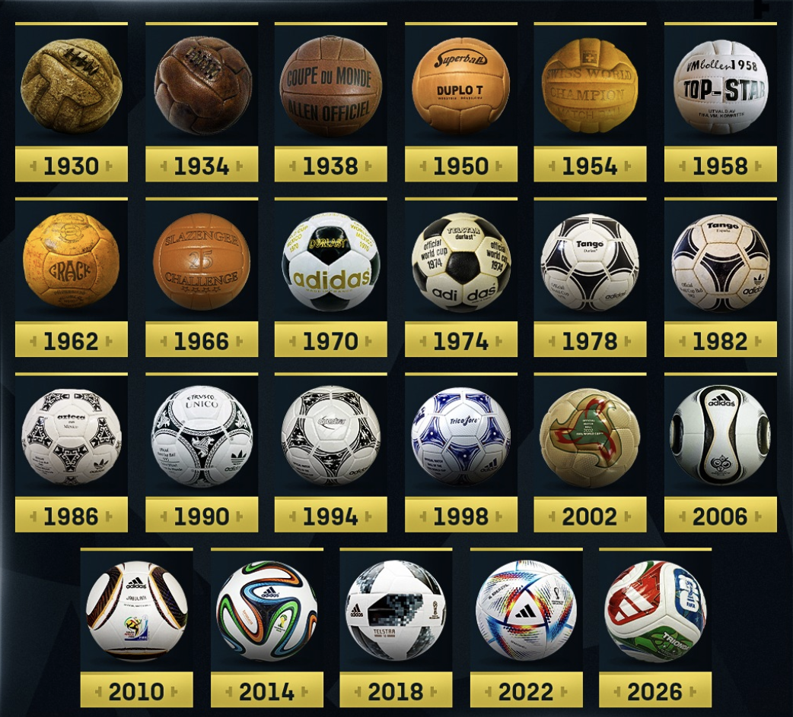
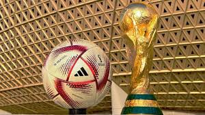
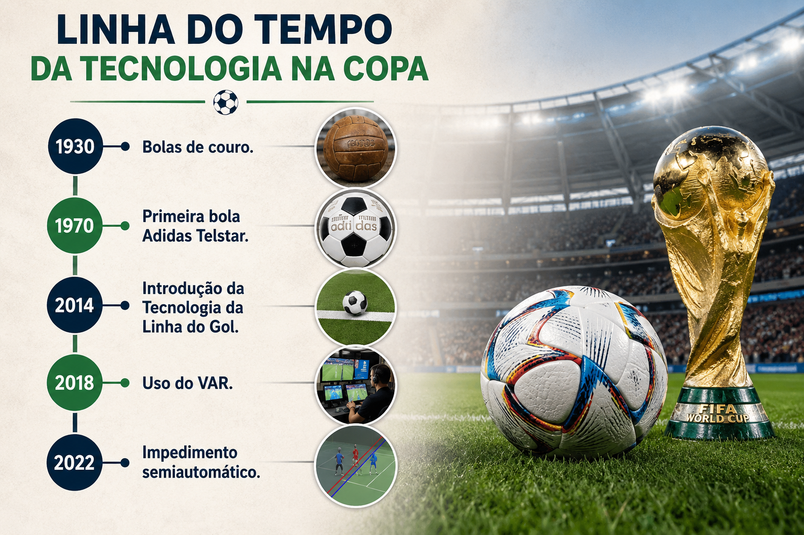
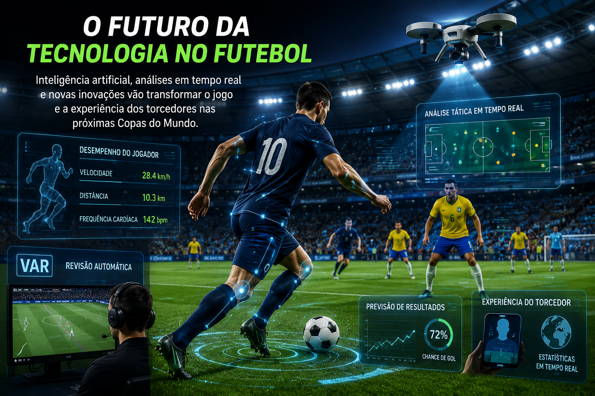
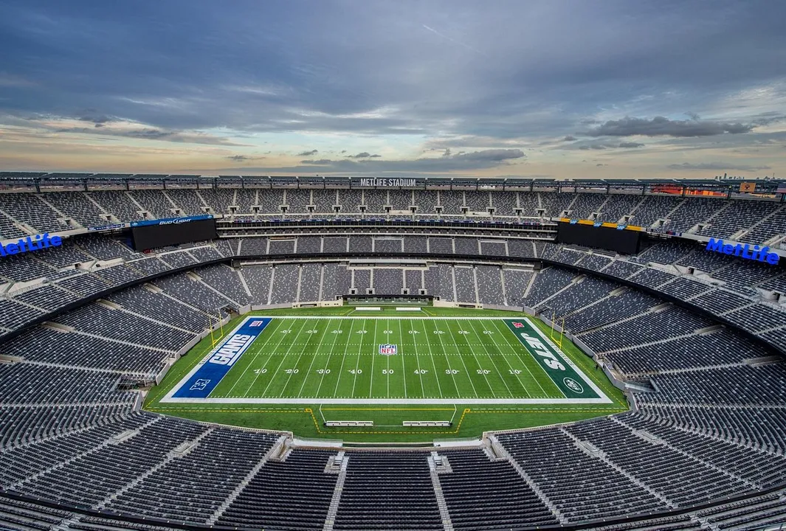

A Evolução das Bolas
A evolução das bolas de futebol é resultado de décadas de pesquisas e testes realizados por fabricantes e especialistas. Atualmente, elas são projetadas para oferecer maior precisão, velocidade e controle durante as partidas. Os materiais modernos também aumentam a durabilidade e garantem que o desempenho da bola seja mantido mesmo após longos períodos de uso. Essas melhorias contribuíram para tornar o futebol mais dinâmico e competitivo. Além disso, o design das bolas é cuidadosamente estudado para melhorar sua aerodinâmica, permitindo trajetórias mais estáveis e previsíveis durante chutes e passes

Tecidos Inteligentes nas Camisas
Os uniformes modernos são desenvolvidos com tecnologias que ajudam os atletas a manterem o conforto durante toda a partida. Os tecidos permitem melhor circulação de ar, reduzem o acúmulo de suor e oferecem maior flexibilidade para os movimentos. Além disso, muitas empresas utilizam materiais reciclados na fabricação das camisas, demonstrando a preocupação com a sustentabilidade e a preservação do meio ambiente. Esses avanços permitem que os jogadores mantenham um alto nível de desempenho mesmo em condições climáticas adversas.
Tecnologia de Impedimento Semiautomático
Essa tecnologia representa um dos maiores avanços recentes da arbitragem esportiva. Com o auxílio de câmeras especiais e inteligência artificial, o sistema consegue analisar a posição dos jogadores em poucos segundos. Isso reduz a possibilidade de erros humanos e torna as decisões mais transparentes. A inovação também ajuda a manter o ritmo do jogo, evitando interrupções prolongadas para revisão dos lances. Dessa forma, a tecnologia contribui para aumentar a justiça esportiva e a confiança dos torcedores nas decisões tomadas durante as partidas.

Ciência e Performance Física
A preparação física dos jogadores modernos depende fortemente da ciência. Profissionais utilizam equipamentos de monitoramento para acompanhar diversos indicadores do corpo dos atletas antes, durante e após os treinamentos. Essas informações ajudam a planejar exercícios específicos para cada jogador, melhorando seu desempenho e reduzindo o risco de lesões. A combinação entre tecnologia e conhecimento científico tem sido fundamental para elevar o nível do futebol profissional. Além disso, estudos sobre alimentação, hidratação e recuperação muscular auxiliam os atletas a alcançarem melhores resultados.
Curiosidades Tecnológicas
A Copa do Mundo frequentemente serve como laboratório para novas tecnologias esportivas. Muitas ferramentas testadas durante o torneio acabam sendo adotadas em campeonatos nacionais e internacionais. Além disso, as transmissões televisivas utilizam recursos avançados, como câmeras de alta definição, replays em câmera lenta e gráficos em tempo real, tornando a experiência dos torcedores ainda mais completa e envolvente. Essas inovações ajudam milhões de pessoas ao redor do mundo a acompanharem os jogos com mais detalhes e qualidade.

Linha do Tempo da Tecnologia na Copa
1930 - Bolas de couro.
1970 - Primeira bola Adidas Telstar.
2014 - Introdução da Tecnologia da Linha do Gol.
2018 - Uso do VAR.
2022 - Impedimento semiautomático.

O Futuro da Tecnologia no Futebol
O futebol continuará evoluindo com o avanço da tecnologia. Novos sistemas de análise de desempenho, inteligência artificial e dispositivos inteligentes poderão fornecer informações ainda mais detalhadas sobre cada partida. Essas ferramentas poderão auxiliar treinadores, árbitros e jogadores na tomada de decisões, tornando o esporte cada vez mais moderno. Ao mesmo tempo, será importante equilibrar inovação e tradição para preservar a essência do futebol. Especialistas acreditam que os próximos anos trarão mudanças significativas na forma como o esporte é treinado, administrado e assistido pelos torcedores.

Tecnologia nos Estádios
Os estádios atuais são verdadeiros centros tecnológicos. Além dos telões gigantes e da conexão de internet para os torcedores, muitos contam com sistemas inteligentes de iluminação, controle de acesso e monitoramento por câmeras. Algumas arenas também utilizam soluções sustentáveis, como energia solar e reaproveitamento de água. Essas tecnologias melhoram a experiência do público e tornam os eventos mais seguros e eficientes. Com isso, os estádios se tornam ambientes mais modernos, confortáveis e preparados para receber grandes competições internacionais.
